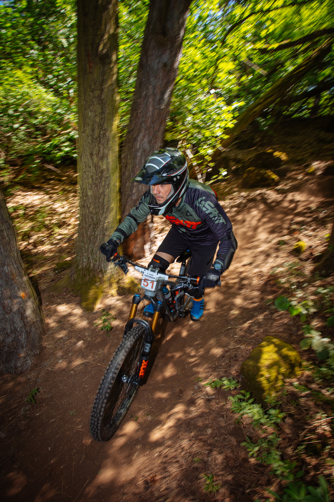
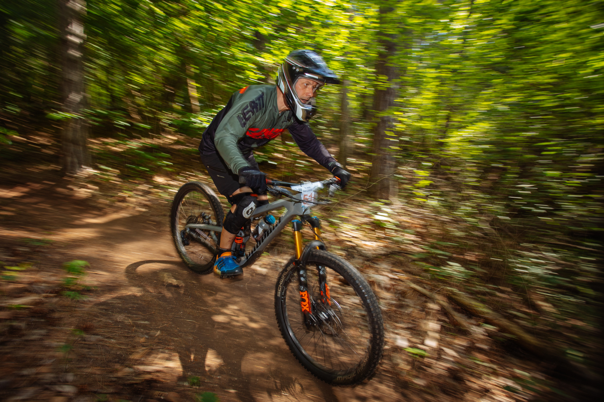
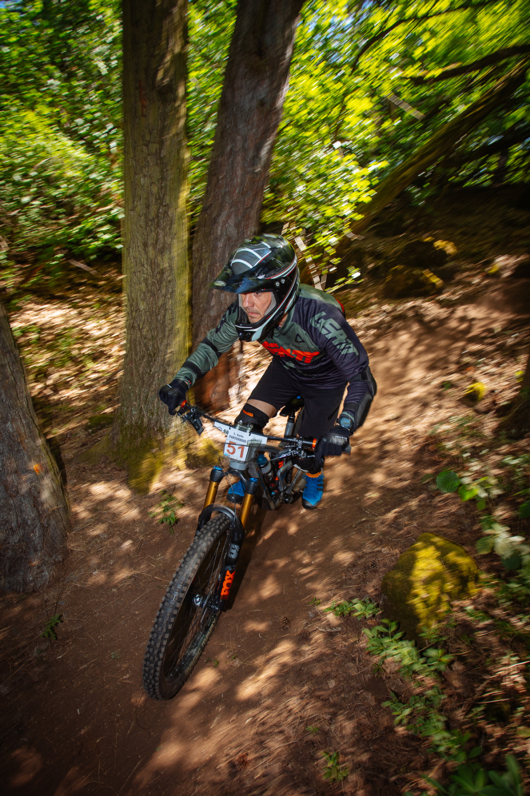
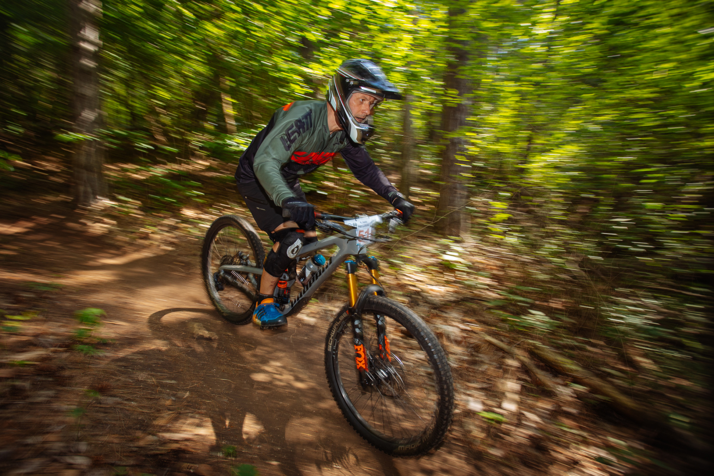
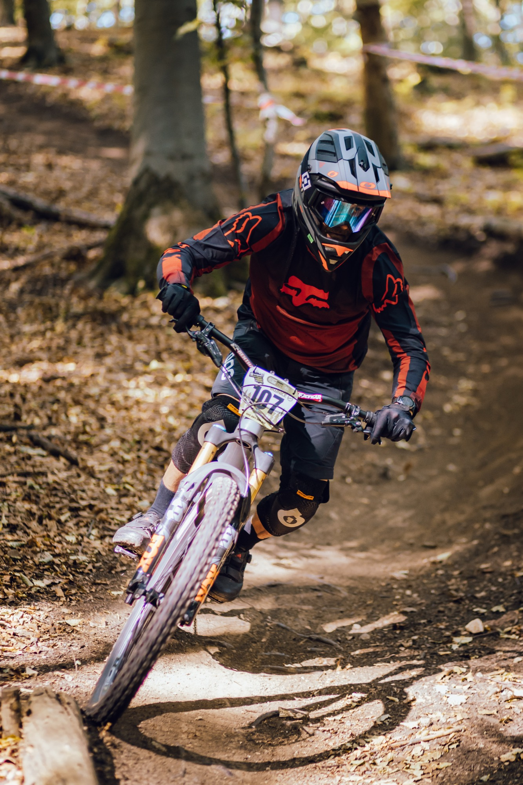
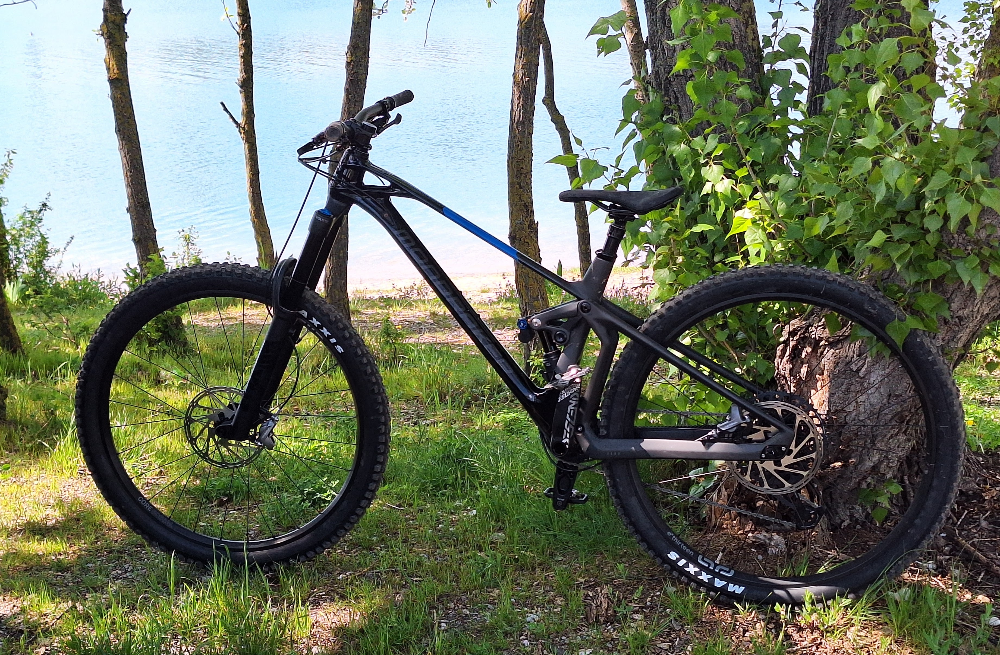
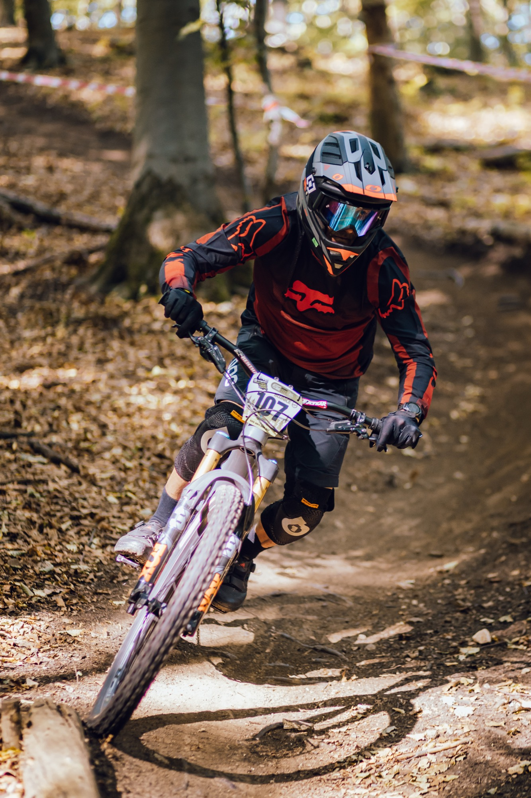
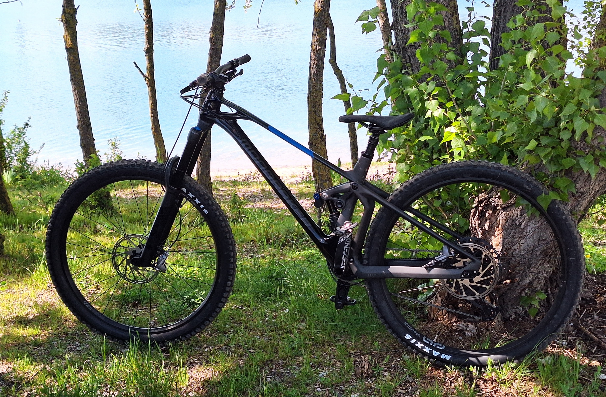

 




Preteky 2025
| Dátum | Pretek | Výsledok | |
|---|---|---|---|
| 5.10. | SPDH | KOŠÚTKA II | |
| 21.9. | SPEN | Partizánske | |
| 14.9. | SPDH | Malinô Brdo | |
| 24.8. | SPEN | Drozdovo | |
| 27.7. | SPEN | Bojnice (SPEN MSR) | |
| 22.6. | SPDH | Kubínska Hoľa (SPDH MSR) | |
| 15.6. | SPEN | Košútka |
Čas: 16:50.6 (12:26.3 - 20:56.9) (race, hobby) 10. miesto z 12 v kategórii Muži 40+ 61. miesto zo 73 celkovo Enduro Challenge |
| 8.6. | SPDH | Mýto pod Ďumbierom | |
| 1.6. | SPEN | Kálnica |
Čas: 15:08.8 (+4.09.4) (časy 10:59.3 - 19:38.9) (race, hobby) 14. miesto z 15 v kategórii Muži 40+ 101. miesto zo 123 celkovo Enduro Challenge |
| 4.5. | SPDH | KOŠÚTKA I | |
New bike day - Mondraker Superfoxy R
13.4.2025 - Objednané z bike-discount.com a dovezené 13.4.2025. 29" palcové kolesá, Fox Float 38" performance vpredu a Öhlins TTX vzadu.
Preteky 2024
| Dátum | Pretek | Výsledok | |
|---|---|---|---|
| 20.10. | SPEN | Partizánske |
Čas: 18:42.5 (12:44.5 - 19:27.3) (race, hobby) 6. miesto zo 7 v kategórii Muži 40+ 50. miesto z 54 celkovo Enduro Challenge Preložené z Pezinskej Baby - nepovolený pretek kvôli jelenej ruji. |
| 22.09. | SPENHES | Bojnice |
Čas: 13:58.1 (10:05.5 - 18:50.1) (race, hobby) 10. miesto z 12 v kategórii Muži 40+ 83. miesto z 92 celkovo Enduro Challenge |
| 18.08. | SPENHES | Drozdovo | Vynechané, absolvovaný len tréning. (mapa) |
| 28.07. | SPENHES | Žilina | Nedokončené pre zranenie (race, hobby) |
| 07.07. | SPENHES | Košútka | Vynechané pre dovolenku (mapa) |
| 01.06. | SPEN | Kálnica |
Čas 17:44.8 (12:32.0 - 28:12.4)
(race, hobby) 9. miesto zo 14 v kategórii HOBBY Super Masters 40+ (74. zo 111 celkovo v Hobby) |
{kind=link}
{kind=link}
Preteky 2023
| Dátum | Pretek | Výsledok |
|---|---|---|
| 15.10. | SPENBratislava |
Čas: 25:43.75 (18:27.8 - 30:12.1) (race, hobby)
17. miesto z 21 v kategórii HOBBY Super Masters 40+ |
| 08.10. | HESBojnice |
Čas: 16:51.5 (10:51.7 - 20:39.2) (komplet výsledky)
59. miesto zo 61 v kategórii Muži (101. miesto zo 104 celkovo) |
| 01.10. | SPDHKošútka II | |
| 10.09. | HESVeľká Lehôtka |
Čas: 12:16.0 (8:54.9 - 16:12.0) (komplet výsledky)
54. miesto zo 74 v kategórii Muži (98. miesto zo 137 celkovo) |
| 03.09. | SPENMýto pod Ďumbierom | Zrušené |
| 13.08. | SPDHMalino brdo | |
| 30.07. | SPENKošice | Vynechané (mapa) |
| 23.07. | SPDHVrátna | |
| 25.06. | SPDHMýto pod Ďumbierom | |
| 11.06. | HESJasenská dolina |
Čas: 10:08.8 (7:16.7 - 13:17.4) (komplet výsledky)
38. miesto zo 45 v kategórii Muži (72. miesto z 88 celkovo) |
| 03.06. | SPENKálnica |
Čas 12:24.4 (10:57.4 - 15:08.9) (komplet
výsledky)
9. miesto z 15 v kategórii Hobby (Enduro Challenge) |
| 28.05. | SPDHVeľká Rača | |
| 14.05. | HESPartizánske |
Čas 19:25.0 (13:40.9 - 38:39.2) (komplet výsledky)
45. miesto z 50 v kategórii Muži (90. zo 101 celkovo) |
| 30.04. | SPDHKošútka I |
{kind=link}
Preteky 2022
| Dátum | Pretek | Výsledok |
|---|---|---|
| 16.10. | SPENBratislava TBK | Čas 25:13.8 (18:18.6 - 31:44.2) (race,
hobby) 10. miesto z 22 v kategórii HOBBY Super Masters 40+ |
| 25.09. | SPENMalino Brdo | Zrušené. |
| 28.08. | HESBojnice | Vynechané pre dovolenku. |
| 14.08. | SPENMýto pod Ďumbierom | Vynechané pre zranenie. |
| 24.07. | HESVeľká Lehôtka | Čas 12:26.4 (9:10.1 - 14:50.4) (komplet výsledky)
37. miesto z 53 v kategórii Muži (61. z 88 celkovo) |
| 19.06. | HESDrozdovo | Vynechané - broken linkage. |
| 04.06. | SPENBikefest Kálnica | Nedokončené - broken linkage. |
| 15.05. | HESPartizánske | Čas 13:20.6 (10:51.7 - 15:51.2) (komplet výsledky)
40. miesto zo 65 v kategórii Muži (73. zo 115 celkovo) |
| 08.05. | SPENOščadnica | Čas 32:07.8 (17:48.0 - 34:08.4) (race, hobby) 12. miesto zo 14 v kategórii RACE Masters 35+ |
TBK Enduro 2021
10.10.2021 - Prvý pokus na enduro pretekoch.
New bike day - Propain Spindrift
9.3.2021 - Po takmer troch mesiacoch čakania konečne dorazil. Objednané 21.12.2020, doručené 9.3.2021.